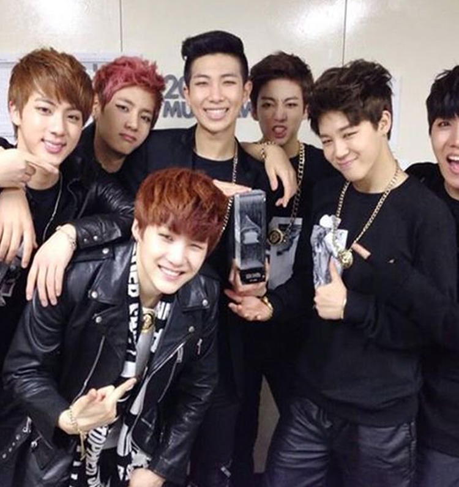
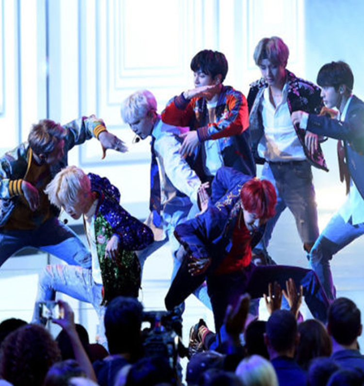
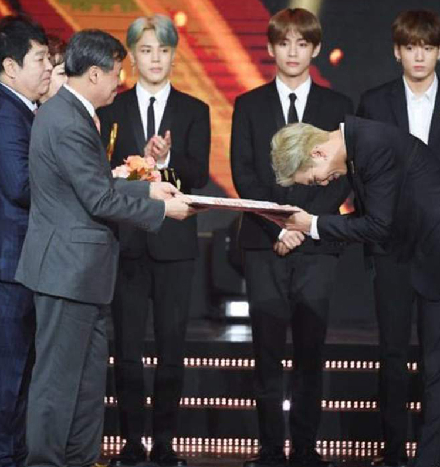
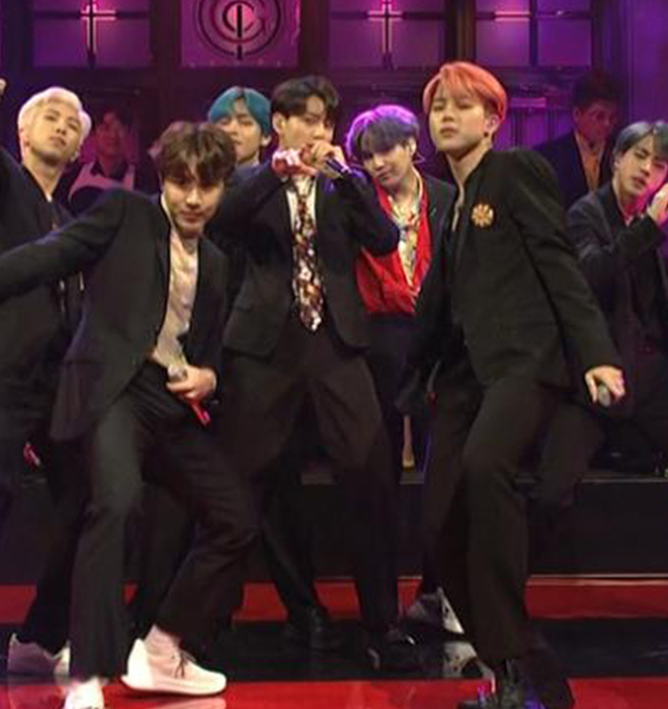

BTS are a 7 membered boy group founded by BigHit entertainment.
They are comprised of members RM (leader, rapper), Jin (vocalist), Suga (rapper), J-Hope (rapper, dancer), Jimin (vocalist, dancer), V (vocalist), and Jungkook (triple threat).
The group debuted in June, 2013 with the song No More Dream.
One month later, they announced their fan club, ARMY

In early 2014, BTS won “Rookie of the Year” at all the well known award shows.
BTS got their very first music show win on SBS MTV’s “The Show” for their single "I Need U" in 2015.
BTS won their first album of the year grand prize at the Melon Music Awards in late 2016 for “The Most Beautiful Moment In Life: Young Forever”.
They did not expect to win.
In 2017, BTS was the first K-Pop group to be nominated for a Billboard Music Award for top social artist.
They won.

A few months later, following the release of their new album Love Yourself: Her, BTS was invited to perform at the American Music Awards, becoming the first K-Pop group to perform on an American awards stage.

Following the record breaking release of “Love Yourself: Tear” in May, 2018, BTS became the youngest ever recipients of the “Order of Cultural Merit”.
They were awarded by the president of South Korea for their contributions to spreading Korean culture and language.
Later that year, they spoke at the 73rd United Nations General Assembly.

In 2019, BTS became the first K-Pop group to perform on Saturday Night Live.
Their current album, "Map of the Soul: Persona" has been topping music charts worldwide since it's release.
Together, ARMY and BTS work to push the group to unprecedented heights.